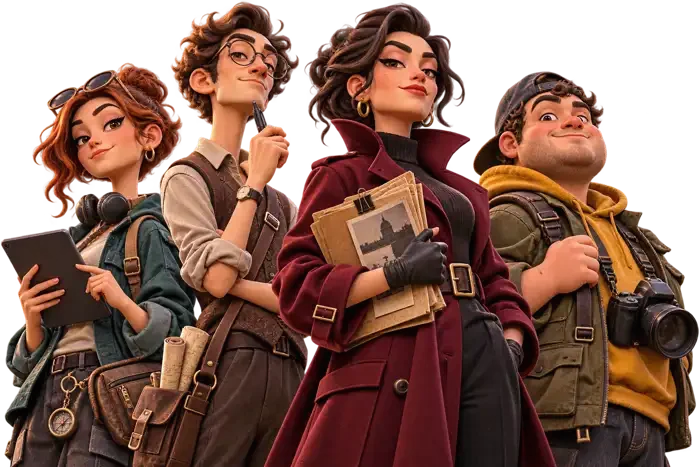
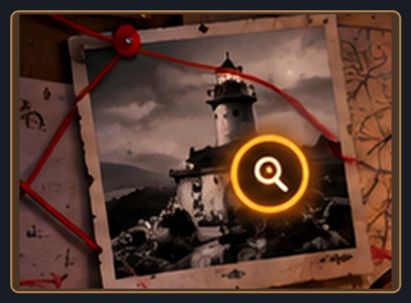

◆ НЕ ЧИТАЙ ИСТОРИЮ. РАСКРОЙ ЕЁ.
У ГОРОДА
ЕСТЬ ТАЙНА.
НАЙДИ ОТВЕТ.
40 городов, 40 историй. Исследуй локации, поворачивай найденные предметы, проверяй показания и решай, что произошло на самом деле.
40 городских дел7 глав в каждом0 ₽ в демоверсии

ДЕЛО В ФОКУСЕ 01 / 40

ЛИСТАЙ ДАЛЬШЕ ↓ХУДОЖЕСТВЕННЫЕ РЕКОНСТРУКЦИИ ПО МОТИВАМ ГОРОДСКИХ ИСТОРИЙ
001 / ИГРОВЫЕ ДЕЛАВыбери, с чего
Выбери, с чего
начнётся история.
002 / БЕЗ СЛОЖНОГО УПРАВЛЕНИЯИграть просто.
Играть просто.
Разгадать сложнее.
01 / ОСМОТРИ
Найди предметы в сцене. Интересные места подсвечиваются мягко и ненавязчиво.
02 / ИЗУЧИ
Поверни улику, посмотри оборотную сторону, запомни важную деталь.
03 / СОПОСТАВЬ
Проверь шифр, свидетельства и хронологию. Прими своё решение.